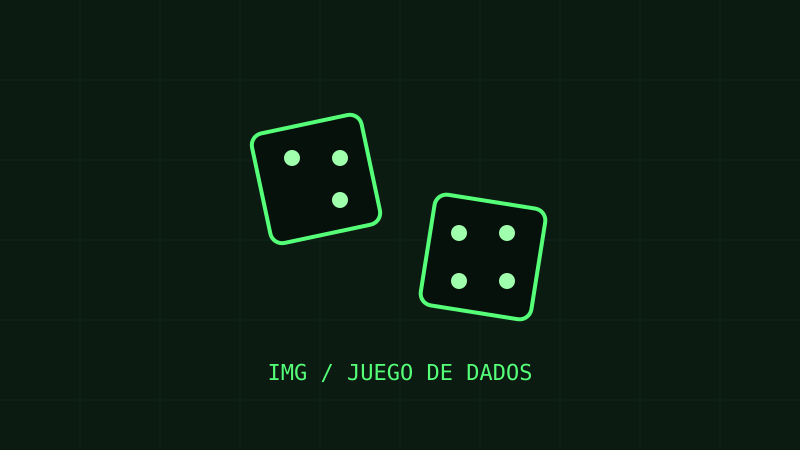
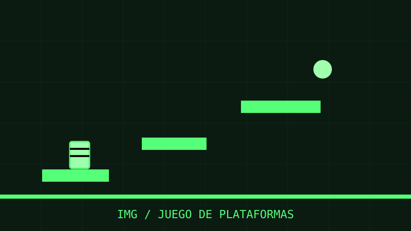

Ubicación
Río Gallegos
Provincia de Santa Cruz
Portfolio personal / Disponible para nuevos desafíos
Desarrollador C#Desarrollador Front y Backend .NET
Estudiante entusiasta, intentando ingresar en el mundo IT.
01 / Perfil
Soy de Río Gallegos, Provincia de Santa Cruz, y estudiante de programación. Estoy cursando el 2.º año de la Tecnicatura Universitaria en Programación en la UTN Facultad Regional General Pacheco.
Me gradué en 2023 de Técnico Universitario en Administración en la UTN Facultad Regional Santa Cruz. Actualmente me desempeño como empleado administrativo y me gustaría poder trabajar en el mundo de IT.
Río Gallegos
Provincia de Santa Cruz
Inglés
Principiante
Técnico Universitario en Administración — UTN Facultad Regional Santa Cruz.
Estudiante de la Tecnicatura Universitaria en Programación — UTN Facultad Regional General Pacheco.
Responsable de Administración en un gremio.
Trayectoria
Gremio
Comercio dedicado a la venta de repuestos automotor
Comercio dedicado a la venta y reparación de grupos electrógenos para empresas petroleras
Empresa de transportes
02 / Stack
Tecnologías que estoy aprendiendo y usando en mis proyectos.
03 / Laboratorio
Una muestra de proyectos de programación.
Aplicación de gestión desarrollada en C++.

Juego de dados desarrollado en C++.

Copia del juego Mario Bros, desarrollada en C++.
05 / Mensaje entrante
¿Tenés una oportunidad, propuesta o proyecto en mente? Completá el formulario y me pondré en contacto.
canal_abierto: true